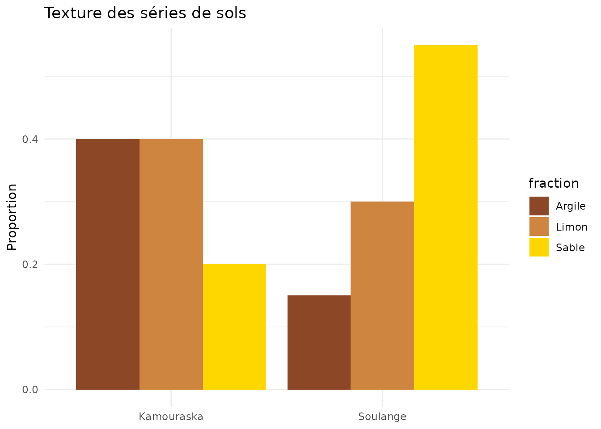
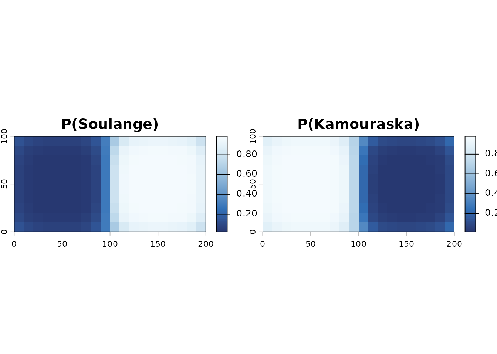
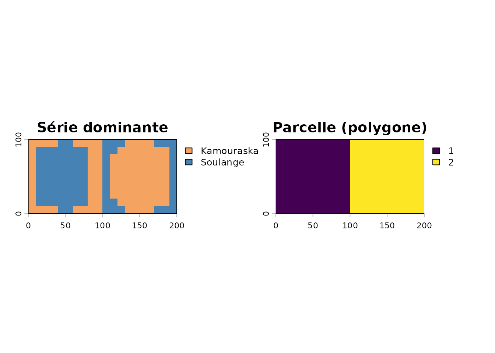
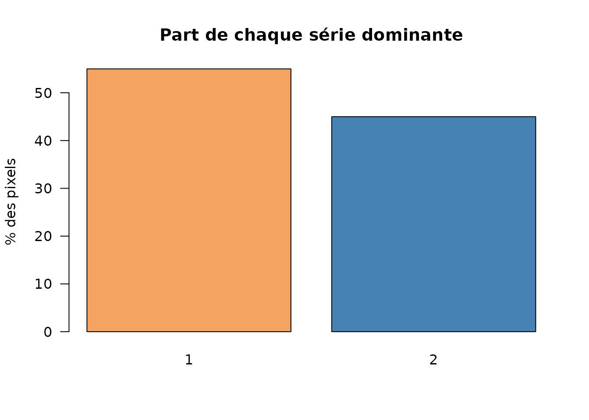

Le problème
La carte pédologique du Québec décrit des polygones contenant chacun un mélange de séries de sols (avec un pourcentage et une texture). Pour l’agriculture de précision, on veut passer de ces polygones à une carte au pixel de la série dominante.
proba_et_classement_serie_quota_ilr() combine trois
sources :
- la texture de chaque série (sable / limon / argile) ;
- le voisinage spatial (lissage gaussien) ;
- le MNT (les sols fins sont plus probables dans les bas de pente).
Le classement final respecte les proportions (quota) de chaque polygone, via une comparaison en coordonnées ILR.
Exemple synthétique
On crée deux parcelles voisines, chacune composée de deux séries, un MNT en pente douce, et la table des séries.
p1 <- st_polygon(list(matrix(c(0, 0, 100, 0, 100, 100, 0, 100, 0, 0),
ncol = 2, byrow = TRUE)))
p2 <- st_polygon(list(matrix(c(100, 0, 200, 0, 200, 100, 100, 100, 100, 0),
ncol = 2, byrow = TRUE)))
polys <- st_sf(Code.polygone = c("A", "B"),
geometry = st_sfc(p1, p2, crs = 32618))
mnt <- terra::rast(xmin = 0, xmax = 200, ymin = 0, ymax = 100,
resolution = 10, crs = "EPSG:32618")
xy <- terra::xyFromCell(mnt, 1:terra::ncell(mnt))
terra::values(mnt) <- 30 + xy[, 1] / 5 + 3 * sin(xy[, 2] / 30)
table_series <- data.frame(
Code.polygone = c("A", "A", "B", "B"),
Composante = c("Soulange", "Kamouraska", "Soulange", "Kamouraska"),
Pourcentage = c(60, 40, 30, 70),
Sable = c(0.55, 0.20, 0.55, 0.20),
Limon = c(0.30, 0.40, 0.30, 0.40),
Argile = c(0.15, 0.40, 0.15, 0.40)
)
table_series
#> Code.polygone Composante Pourcentage Sable Limon Argile
#> 1 A Soulange 60 0.55 0.3 0.15
#> 2 A Kamouraska 40 0.20 0.4 0.40
#> 3 B Soulange 30 0.55 0.3 0.15
#> 4 B Kamouraska 70 0.20 0.4 0.40
# Composition granulométrique des séries
ser <- unique(table_series[, c("Composante", "Sable", "Limon", "Argile")])
ser_long <- tidyr::pivot_longer(ser, c("Sable", "Limon", "Argile"),
names_to = "fraction", values_to = "proportion")
ggplot(ser_long, aes(Composante, proportion, fill = fraction)) +
geom_col(position = "dodge") +
scale_fill_manual(values = c(Sable = "gold", Limon = "tan3",
Argile = "sienna4")) +
labs(title = "Texture des séries de sols", x = NULL, y = "Proportion") +
theme_minimal()
Désagrégation
res <- proba_et_classement_serie_quota_ilr(
polygones_sf = polys,
table_series = table_series,
mnt = mnt,
grid_m = 10,
sigma_voisin = 15,
verbose = FALSE,
progress = FALSE
)
# Probabilité d'appartenance à chaque série
terra::plot(res$prob, col = hcl.colors(100, "Blues"),
main = c("P(Soulange)", "P(Kamouraska)"))
par(mfrow = c(1, 2), mar = c(2, 2, 3, 2))
terra::plot(res$closest_label, main = "Série dominante",
col = c("sandybrown", "steelblue"))
terra::plot(res$id_r, main = "Parcelle (polygone)")
# Vérifier que les quotas respectent les proportions de la table
tab <- table(terra::values(res$closest_label), useNA = "no")
round(prop.table(tab, margin = NULL) * 100, 1)
#>
#> 1 2
#> 55 45
barplot(prop.table(tab) * 100, col = c("sandybrown", "steelblue"),
ylab = "% des pixels", las = 1,
main = "Part de chaque série dominante")
Interprétation
- La série dominante (
closest_label) donne la carte finale. - Les couches
probquantifient l’incertitude : une probabilité proche de 0,5 signale une transition. - Le paramètre
alpha_voisincontrôle l’adhérence spatiale ;beta_mntl’influence du relief.
Données réelles (Québec)
champ <- st_read("mon_champ.shp")
# 1. Télécharger les polygones pédologiques + la table des séries
pedo <- telecharger_pedologie_quebec(champ)
polys <- pedo$polygones
table_series <- pedo$table_series
# 2. Récupérer un MNT LiDAR
mnt <- telecharger_lidar(champ)
# 3. Désagréger
res <- proba_et_classement_serie_quota_ilr(
polygones_sf = polys,
table_series = table_series,
mnt = mnt
)Paramètres principaux
| Paramètre | Rôle | Défaut |
|---|---|---|
grid_m |
Résolution de la grille de calcul (m) | 20 |
sigma_voisin |
Portée du lissage de voisinage (m) | 60 |
alpha_voisin |
Poids de la similarité de voisinage | 8 |
beta_mnt |
Poids de l’effet du MNT | 0.2 |
lambda_base |
Poids de la probabilité de base | 0.25 |
À retenir
proba_et_classement_serie_quota_ilr() transforme des
polygones de sols hétérogènes en une carte au pixel cohérente avec la
texture, le voisinage et le relief, tout en respectant les proportions
déclarées.